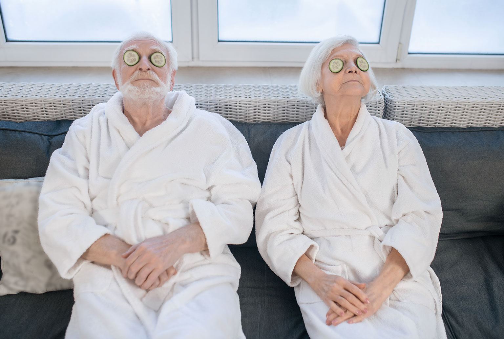

Project: Sunday Spa-day!
Dit is een korte uitleg over het probleem of het idee met zoveel mogelijk objectieve feiten. Elke eerste zondag van de maand komt een schoonheidsspecialiste langs bij de geïnteresseerde bewoners én zorgkundigen voor aromatherapie, gelaatsverzorging, manicure of pedicure!
Hier komt dan een uitgebriedere uitleg over het probleem of idee. Hierin worden meer details, context, exacte gebeurtenissen, gedachten, feiten, etc aangegeven, volgens de wetenschappelijk onderbouwde cyclus van Korthagen. Eventueel overzichtelijk in deze onderverdelingen onderverdeeld. Dit wordt opgesteld door de persoon die de ingestuurde formulieren bekijkt en dan samenvat.
Discussieforum
Reactie van Ann:
Verschillende bewoners op mijn afdeling zijn zeer enthousiast over het idee van gelaatsverzorgingen!
Brent antwoordt:
Voor mijn gesloten afdeling lijkt dit een beetje moeilijk...
Sofie antwoordt:
We kunnen wel eens proberen, toch?